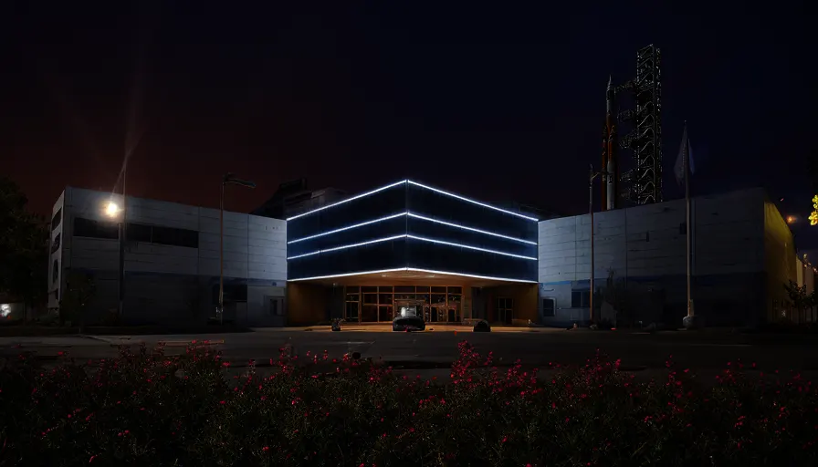
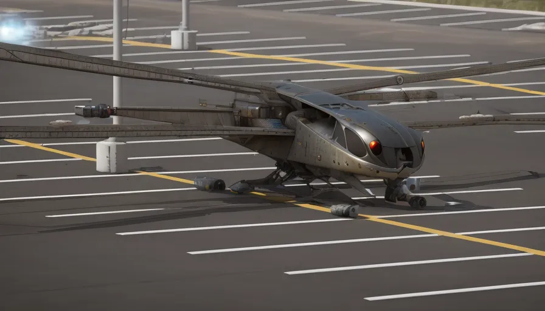
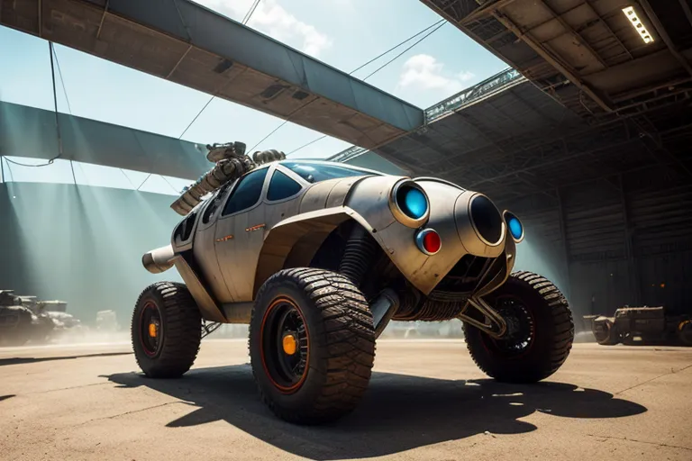

The Space Pioneers are a semi-isolationist group working and living within the Johnson Space Center, a pre-war United States Space Agency (USSA) facility dedicated to space travel and exploration. Specifically, the R&D and mission control parts of the US Space Program. While referred to as the Space Pioneers in a joking manner by wasters, they refer to themselves as the USSA nad retain the use of their pre-war iconography and terminology, save for having designed a new USSA logo for the post-war era.
The Space Pioneers are often compared to the Brotherhood of Steel, and with good reason. They are a semi-isolationist group equipped with advanced technology who have divided themselves into distinct internal groups each with a purpose who are overseen by a single individual and function close to a combination knightly / monastic order. The Space Pioneers plunder pre-war technology, taking certain items by force if need be, and hoard the majority of their technology for themselves.
The key differences is the Space Pioneers mission is benevolent. They recruit outside of their faction, often undertake missions for the common good, and offer their assistance to wasters for free or in trade. While they employ violence they do so only as a last resort, prefeing trade and exchange wherever possible. They are well liked by the common people for this, but have made dire enemies with the Houston Technocrats as both groups have warred over certain pieces of salvage in the past.
While largely benevolent, the Space Pioneers have a list of things they require for “the Mission”. These things are either irreplaceable or functionally unique, and as such they will do everything in their considerable power to obtain them. Failing to obtain these items is seen as an existential threat for humanity. Not their group. Humanity.
The Mission, properly known as Operation Prometheus, is as follows:
☑ Construct a rocket launch platform and gantry.
☑ Construct a spacecraft able to reach MEO (Medium Earth Orbit).
☐ Use the Johnson Orbital Launch Platform to send a spacecraft to the remaining space stations and acquire untainted genetic samples of human, animal, and plant DNA stored there for scientific research.
☐ Repair at least one Research Station.
☐ Develop gene therapy to repair human DNA.
☐ Use unmutated crop DNA to create crops suited for modern Earth.
☐ Clone and re-seed keystone species.
34 years ago, the Space Pioneers have reached a bottleneck relating to fuling their craft. The Houston Technocrats possess the capacity to create the LOX/RP-1 fuel necessary for the mission, but refuse to do so due both to their archrival status and seeing many of the mutations within the human genome, the general ecological state of the world, and limited crop varieties as important and necessary for their own plans.
Consequently, the last few decades have seen many acts of espionage, sabotage, and limited enguagments as the Pioneers attempt to obtain the tech needed to create the fuel, and the Technocrats sabotage the Pioneer’s efforts to develop alternative propulsion. Currently the Pioneers are attempting to create a fusion reactor to power a massive gauss launcher to get the ship into LEO, where they can make use of fuels they can produce to finish the mission.
The reactor is proving difficult to create for reasons they do not disclose to outsiders, lest the Technocrats find a new avenue to sabotage the Mission. Strictly speaking, the Center’s existing fusion reactor could power the launch system, but only the launch system. The Space Pioneers firmly believe the Center’s photonic resonance shield and laser defense grid must remain fully powered during the launch, lest their rivals or some other enemy shoot down Prometheus 1 (as their ship has been christened).
The history of the Space Pioneers is both well documented and critical to understanding them as a faction. While it should be noted the documentation comes from themselves
In 2077 the United States Space Administration (USSA) was working overtime to attempt to breach the politics surrounding the Mars Shot mission and ensure it wouldn’t be delayed. To ensure the mission would launch as planned on July 4th 2078 the Johnson Space Center had been put into full operation following a decades long period of reduced operations.
Not only were there countless research, development, and training operations to do, but the facility also needed renovations, upgrades, and even additional facilities built to handle the mission control operations of the upcoming Mars mission. Consequently, the center was fully staffed round the clock, seeing an average of 3,200 people on any given day and hour.
On Saturday, October 23, 2077 at 09:13 EST the USSA was asked to help confirm the launch of Chinese nuclear weapons by the Integrated Operational Nuclear Detection System. The JSC’s orbital tracking systems verified the launch within moments. This was the Big One. The moment every American had dreaded for decades.
In the event of a Nuclear Exchange, the Center was to use its force fields to weather an attack and coordinate defenses of military institutions across the whole of the USA. In the moment Director Rory Floriane chose to ignore those orders. Houston was not only the home of everyone at the Center, it was where their families were. The standing orders were refused.
"As scientists and engineers, it is our duty to use our knowledge and expertise for the betterment of humanity. We cannot stand idly by while innocent lives are threatened by self-interested politicians who long ago forgot why they were entrusted with power. Our mission is to explore the mysteries of the universe to the quality of life on Earth. We have the power to save lives today, those of the people, or those of the government which would cast them aside. I choose to do what is right, not what I have been ordered to do. I pray you choose to do the right thing as well because I cannot do this alone."
Roused by the Director’s speech, the majority of the USSA employees followed the call to act. A brief firefight occurred between the Center’s security personnel and the small Enclave detachment based at the Center. The Security forces won, primarily due to the Enclave forces being taken entirly by supprise with most of them Center called the local military and national guard bases, bypassing the chain of command, and began passing target tracking data directly to the people who would be launching countermeasures.
The Center’s full staff set to the task of defending Houston as much as possible. The Center’s STARSHIELD (Spacecraft Tracking and Automatic Response System for High-risk Emergency and Launch Defense) system was activated and quickly retasked to shoot down incoming warheads rather than debris from a failed rocket launch. Laboratories cleared space to create field hospitals for the aftermath.
The Center stopped 89 of 94 warheads launched at Houston (most of which were directed at the Center, given its roll in coordinating the national missile defense arrays). The Center tasked itself with its current mission within months of the Great War, though did not seriously begin work on it for 30 years, as the need to create stable food, water, and personnel supplies came first.
The Space Pioneers are highly intelligent and technologically advanced, with access to cutting-edge equipment and research facilities. They have a deep knowledge of physics, chemistry, and engineering, and are constantly developing new technologies and inventions to improve their lives and the lives of others.
The Space Pioneers are not a military faction, and they do not seek to conquer or dominate others. Instead, they are focused on creating a better future for all humanity, and are willing to share their knowledge and resources with others who share their vision. They are idealistic and optimistic, and believe that humanity can overcome the challenges of the post-apocalyptic world by working together and using science to solve problems.
However, the Space Pioneers are not without their enemies. Some see their technological advances as a threat, and fear that they could become too powerful and dominant. Others see them as naive and unrealistic, and believe that their idealism will ultimately lead to failure and disappointment. The Space Pioneers must navigate these challenges and conflicts as they work to rebuild the space program and create a new future for humanity.
Organization and Culture
The Space Pioneers have one of the most clean cut and formal organization systems of any post-war organization. They have no real cultural divisions thanks to the strict upbringing and education provided ot their children and screening ouf outsiders ensuring that all members are laser focused on the Mission. Those who cannot cut it are kicked out. The Pioneers are overseen by the Director of the Johnson Space Center, who is analogous to a king though their power is limited by the Mission Chater. Beneath them are the Facility Directors, a small group consisting of:
Director of Life Support - Oversees the personnel’s living arrangements and daily needs.
Director of Research - Oversees all R&D operations.
Director of Mission Control - Oversees the handling of existing elements and protocols relating to Operation Prometheus, including Center Security, parts fabrication, construction, and maintenance.
Director of the Space Force - Oversees the Center’s armed forces. Organizes, manages, and executes “away missions” both peaceful or hostile. Plans defensive and offensive operations against current threats.
Director of the Astronaut Program - Trains, maintains, and equips the Prometheus Crew, including pilots, co-pilots, commanders, engineers, and repair workers. Keeps a primary, secondary, and tertiary crew ready to go at all times.
Director of Custodians - Responsible for basic upkeep of the Center including cleaning, maintenance, and day-to-day assistance of Center personnel with immediate problems relating to the center’s facilities (stuck door, missing key, ID badge issues, stolen lunch, etc).
As one would expect, each director is responsible for a Department of the same name, save for Life Support which is referred to as the Department of Residential Services. Members of these departments are given the following titles:
Department of Residential Services - Facilities Officer
Research Department - Science Officer
Mission Control Department - Mission Control Officer
Department of the Space Force - Ranger
Department of the Astronaut Program - Operations Officer
Custodian Department - Custodial Officer
These departments make use of a simple ranks structure, similar to military ranks, to organize their members by responsibility and authority level. The ranks are shared across all departments for reasons of equality and moral. The rank emblems are also simple, taking the form of small black or brass “pips” attached to one’s collar and/or on their sleeves beneath the Department Emblem Patch.
The ranks are, in order of greatest to least:
Director of the Center - ○●●●●●
Director - ●●●●
Captain - ○●●●
Commander - ●●●
Lieutenant Commander - ○●●
Lieutenant - ●●
Lieutenant Junior Grade - ○●
Ensign - ●
Chief petty officer - ○
Cadet - (No pips)
Typically speaking, all children living in the Center hold the rank of Cadet, as most of their recruits come form within (Individuals who do not wish to contribute to the Mission are typically sent away, and almost always come back within a month willing to work.), but is also granted to outsiders who are willing to assist with the Mission.
Cadets are educated formally in something akin to pre-war schooling, then transferred to an apprenticeship, where younger members are paired with experienced mentors who guide them through whichever Department they find appealing, or were assigned to.
The Space Pioneers' culture is one of curiosity and exploration. Members are united by their passion for space and their belief that humanity's future lies beyond the confines of Earth. They are dedicated to pushing the boundaries of human knowledge and technology, despite the apparent impossibility of their Mission.
Leader
Director Hammer
The current leader of the Space Pioneers is Director Mike Hammer, a rather controvercial leader whose stances and opinions on the Mission are solid, but has some rather odd domestic policies. They won their chair due to their scientific proweress and favors owed by the other directors, with the People's Vote being against him. It was a narrow election of 5 to 4, and even three years into his 10 year term Director Hammer remains on shaky and controvercial ground.
He has repeatedly patishioned the Board to begin taking controll of the land surrounding the Johnson Space Center inorder to expand and construct new facilities. He has reallocated resources from certian projects many see as Mission Critical to infrastructure projects most see as unnessisary. He was once overheard saying he does not believe the stations stockpiles are intact and they should turn their attention to more Earthly matters. He's attempted to establish contact and positive relations with the Daughters of Athena, an odd cult in the far northern badlands with seemingly nothing to offer the Pioneers other than millitary assistance.
Very few of the Pioneers support or are happy with those decisions, opinions, and operations. Those who are are only loosly supportive of Director Hammer. He has done some important work. He successfuly revitalised the Pioneer's robotics program, allowing for the repair and mantance of their slowly crumbling robotic labor force after 30 years of intermitant neglect. He was able to obtain long range communications technology from the Texas Brotherhood of Steel through the nogotiation of a non-agression pact. His "Wasteland Transport Solutions" venture which gives some of the Badlands factions access to air transport on occasion and within reason ahs greatly improved the Pioneer's reputation with the Badlands other inhabtants.
Yet this is not enough. In short, he is highly unlikly to be relected. Many accuse him of being a Technocrat plant.
Headquarters

Headquarters of JSC
The Space Pioneers are based out of the Johnson Space Center, a complex of 100 buildings constructed on 1,620 acres (660 ha) in the Clear Lake Area of Houston, which acquired the official nickname "Space City" in 1967.
It stands almost as it did pre-war thanks to its elaborate defense system. This system's primary active feature is STARSHIELD, a large network of laser arrays intended to vaporize the debris from failed rocket launches from it's newly constructed Transit Launch Platform. The STARSHIELD has been repurposed into a defense array capable of attacking ground, air, and sea targets. The Center's primary defensive measure is a massive dome-shield system comprised of photonic energy barriers which allowed it to weather the Great War intact by blocking both the nuclear detonations and EMPs (the dome has never taken a direct hit, and may be vulnerable to such a strike).
The facility functions as a well regulated city, home to nearly 8,000 individuals, and containing the entity of the Pioneer's operations. Save of course for small temporary outposts for study and/or salvage within the badlands, and their few permanent postings at communal wasteland trade hubs. It is therefore key to the Pioneer's operations, their first and last stronghold.
Unique Assets
AH-77 “Airwolf”

AH-77 Conceptual Render
The AH-77 “Airwolf” is a multi-purpose variable-frame quad-winged aircraft used by the Space Pioneers primarily for utility, though is armed and quite capable as an attack helicopter. It greatly resembles a dragonfly, with four large wings that can be repositioned for different purposes including folding for storage, high-speed mode, low-speed mode, and a hover configuration.
The Airwolf was designed in 2063 by Dr. Marcus Orion. He designed the Airwolf as part of a research project for the United States government to explore the potential for human colonization on Mars. The name Airwolf was intended to evoke images of a free and powerful beast, capable of going where it pleased. The Airwolf was included in the Mars Shot mission plans to test the design on Mars, but the Great War occurred before the mission could launch.
After the Great War, the Space Pioneers discovered the Airwolf in an abandoned government facility in the ruins of Houston. Recognizing its potential as a highly advanced aircraft, they undertook the difficult task of repairing and retrofitting it for use in the wasteland. The Space Pioneers made several modifications to the original Airwolf design, including upgrading its weapons systems and adding advanced sensors for navigating the dangerous wasteland. The redesign was completed in the year 2287.
The Airwolf is a highly maneuverable aircraft that can fly at high speeds and hover in place. It is armed with laser cannons and rocket launchers, making it a formidable weapon in combat. Its retro-futuristic design is meant to evoke the Space Pioneers' vision of a future where humanity has mastered both space and earth.
The Space Pioneers use the Airwolf for a variety of missions, including reconnaissance, transportation, and combat. Its ability to fly at high altitudes and navigate difficult terrain makes it especially useful for exploring the ruins of old cities and other hard-to-reach locations. The Airwolf is also sometimes used as a symbol of the Space Pioneers' aspirations for a better future, as it represents the potential for human ingenuity and innovation to overcome even the most difficult challenges.
Mars Racer

A Mars Racer
The Mars Racer is a manned rover designed for use on Mars. Its smooth, curved lines and brilliant chrome finish evoke a classic USSA feeling, calling back to the many vehicles of the Space Race and Sea of Tranquility Conflict. It was designed to carry 4 people and a quarter ton of cargo, serving primarily as a means of quick travel for collecting samples or checking remote equipment. To this end, it is one of the fastest and most agile vehicles ever built.
The origins of the Mars Racer are shrouded in mystery. Some say it was built by a team of pre-war engineers who were obsessed with speed and sleek design. Others claim that it was the creation of a lone mechanic who spent decades perfecting every detail. Whatever its origins once it was mass produced by the Space Pioneers, the Mars Racer quickly became the stuff of legend, a symbol of speed and freedom in a harsh and unforgiving world.
Unlike most of their equipment, the Pioneers sell the Mars Racer (but not the fusion cores which power it) to anyone who can afford it. There are maybe 80 of the buggies total, with under half being in the Pioneer’s hands. They tend to last quite a while but their advanced technology is beyond the capacity of most wasters to repair.
As the vehicle isn’t suited for trade due to limited cargo space and an abysmal towing capacity it is primarily used by adventurers, scouts, and wealthy travelers. The Pioneers themselves use them almost exclusively for transporting VIPs and securing small salvage items, data, or transporting messages they do not wish to broadcast over radio.
Despite the advantages the Mars Racer has, most people who can afford to own and operate a vehicle much prefer to repair an old Chrysalis Highwayman due to the greater speed on roads and frankly ludicrous amounts of cargo space.
Astro-Armor
Astro-Armor EVA Suit
Astro-Armor is a hard-body armored spacesuit created for the Mars Shot Project inhouse by the USSA with assistance from Cambridge Polymer Labs, LLC. The suit was designed as armor first and a space suit second given the challenges of space travel and the US Gov’s refusal to allow another asteronaught to be taken by the Zetans (See Clarabella 7 Incident, ref. Colonel Hartigan.) meant that any mission would need to be armed and protected.
The Astro-Armor is functionally equivalent to the US Army’s standard issue combat armor in terms of protection. It features an integrated environment suit capable of protecting its user from all threats biological, chemical, and radiological as well as providing up to 4 days of breathable oxygen, and 7 days of water via liquid recycling. The helmet’s visor is both bulletproof and serves as a screen for projecting an integrated pipboy’s display onto when required.
The Astro-Armor comes with mounting hardware to attach a jet pack, extended oxygen supply, or other modular backpack based systems. It features integrated gravidic repulsors (the same family as those in the eyebot family of robots) which while incapable of allowing the user to fly or levitate on their own, can be used for maneuvering in vacuum, minimizing the impact of a fall, and support the suit’s mass for the user.
The Pioneers use Astro-Armor as their go-to protective suit for all "away missions". It is a formidable set of armor, rendering them immune to most of the dangers they are likely to encounter. The Pioneer's rangers never suffer from heatstroke or hypothermia. They are almost never dehydrated, nor can they become lost which ensures they can resupply efficiently in the field.
The primary drawback to the suits is their expence. Both in manufacture and upkeep. There are very few suits remaining which make use of their original pip-boy system, most have had the system replaced with a less robust post-war computer system (Often called the Mehboy in a jovial semi-derogatory fashion), and few people believe the suits would withstand the vacuum of space for long. Their greatest weakness is most of the suits Nucleostrictive Lining has worn off and the Pioneers cannot manufacture replacement coatings. Consequently most suits do not receive power from the sun, and are instead powered by a bank of energy cells on the belt, which are depleted fairly quickly if one uses any of the suits advanced systems. A few suits have been retrofitted with a fusion core, solving this issue, but these are reserved for higher ranking officers and critical multi-day missions.
Regardless of its faults Astro-Armor is more than adequate as an armored hazmat suit within the Badlands.
Astro-Armor Mk. II
Astro-Armor Mk. II Powered Armor Suit
The Astro-Armor Mk. II is a type of light power armor based on the Mars 2070 “Astro-Armor” EVA Suit, but with a number of modifications made to increase its effectiveness in the harsh conditions of the wasteland. It is designed to use the T-45c frame, due to the Pioneers having several suits available at the dawn of the post-war world which they were able to reverse engineer. At its core it is a suit of Astro-Armor with the powered exoskeleton wrapped around it.
The primary differences from the Astro-Armor EVA Suit is the exoskeleton, along with additional plating and reinforced joints to better withstand damage from debris and enemy fire. The suit remains fully sealed and retains all life support equipment, making radiation, pollutants, toxins, and all other such hazards safe for its users, provided the suit remains unbreached.
The Astro-Armor Mk. II integrates the base suit’s jetpack system for improved mobility. The suit is far too heavy to fly with such systems which renders the jetpack more of a “jump pack” which allows the user to ascend vertically 30m in a single bound, and make 80m as a horizontal leap if several well timed burns are used in tandem with a running start.
The suits have been modified with additional systems to enhance its performance in the wasteland. These include a built-in Geiger counter and atmospheric sensors to warn the wearer of potential hazards, as well as an integrated targeting system with night vision and thermal imaging capabilities for improved visibility in low-light conditions.
The armor is powered by the same TX-28 MicroFusion Pack found in T-51b power armor (Which the Pioneers can manufacture in limited quantities) and consequently has a operational time longer than the lifespan of its user. Additionally, the Astro-Armor Mk. II has been designed to be easily repairable and maintainable with common wasteland tools and spare parts, making it an ideal choice for the Space Pioneers' scavenging and exploration missions.